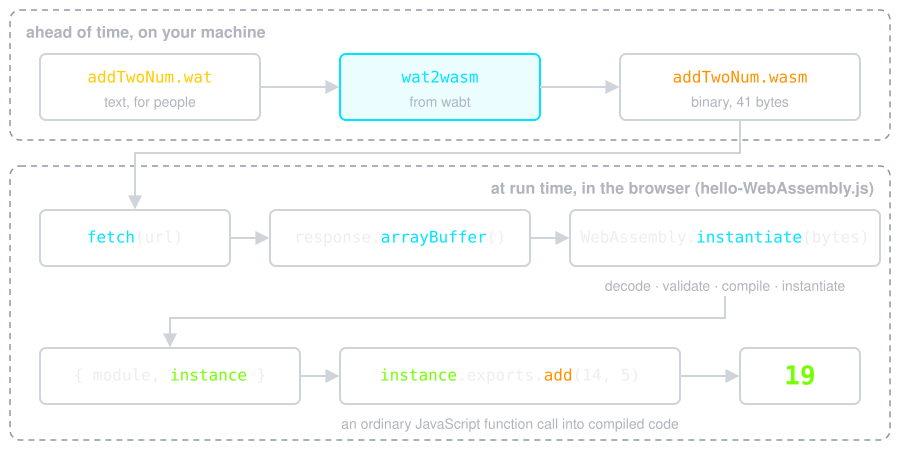
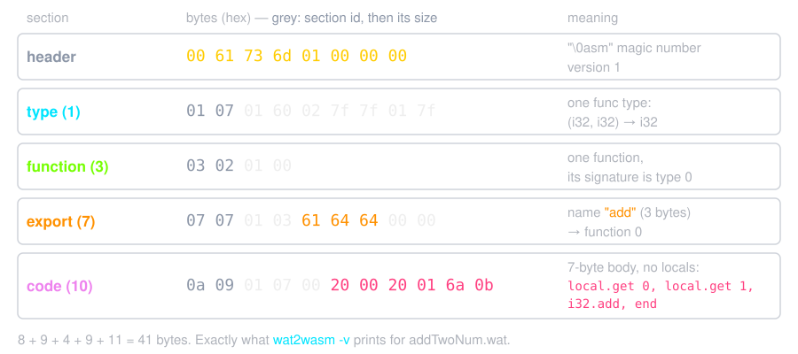

Scroll the slides behind this box, or open the PDF.
.wat file to .wasm, first install
wabt, then run the
commands below in your terminal. More detailed help is on the wabt GitHub
page.
# parse and typecheck test.wat
$ bin/wat2wasm test.wat
# parse test.wat and write to binary file test.wasm
$ bin/wat2wasm test.wat -o test.wasm
# parse spec-test.wast, and write verbose output to stdout (including the
# meaning of every byte)
$ bin/wat2wasm spec-test.wast -v

fetch() cannot read file:// URLs, so opening
index.html from disk only prints an error. Serve
wat2wasm/
over HTTP instead:
$ cd wat2wasm
$ python3 -m http.server
Serving HTTP on :: port 8000 (http://[::]:8000/) ...
::1 - - [14/Oct/2026 06:31:21] "GET / HTTP/1.1" 200 -
::1 - - [14/Oct/2026 06:31:21] "GET /style.css HTTP/1.1" 200 -
::1 - - [14/Oct/2026 06:31:21] "GET /hello-WebAssembly.js HTTP/1.1" 200 -
::1 - - [14/Oct/2026 06:31:21] "GET /addTwoNum.wasm HTTP/1.1" 200 -
Open http://localhost:8000/: the page reads
Addition result: 19.
